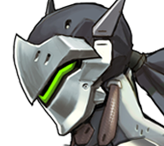
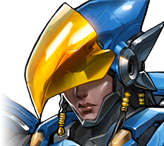

Notes de mise a jour

Genji
Nous augmentons la cadence de tir de Shuriken pour rendre Genji plus efficace lorsqu’il n’a pas sa capacité ultime, tout en augmentant le coût de Lame du dragon pour compenser cette hausse potentielle de dégâts.
Shuriken
Récupération réduite de 0,75 à 0,68 seconde.
Lame du dragon
Coût de la capacité ultime augmenté de 15%.
Mei
Il y a quelque temps, nous avons ajusté la Cryostase de Mei pour que son comportement en matière d’interactions fonctionne de la même manière que celui de Mur de glace, ce qui signifie que ses alliés ne peuvent plus la cibler lorsqu’elle est à l’intérieur de son bloc. Et puisque ses coéquipiers ne peuvent plus la soigner aussi facilement lorsqu’elle se protège, nous augmentons la cadence de soin de sa Cryostase.
Cryostase
Soins par seconde augmentés de 37,5 à 50 points.
Mei
Cet ajustement apporté aux Stabilisateurs de Pharah vise à trouver un équilibre qui lui permet de conserver son altitude sans trop de problèmes à condition de bien gérer son carburant et ses temps de recharge, mais pas pour autant d’atteindre facilement les grandes hauteurs de certaines cartes puisque cela rendrait le gameplay moins interactif.
Général
Taux de régénération de Stabilisateurs augmenté de 35 à 43.